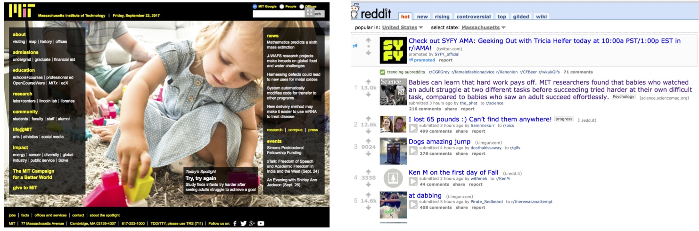

The Atlantic: Infants Can Learn the Value of Perseverance by Watching Adults Ed Yong, 9.21.17
Scientific American: If at First You Don't Succeed, Show Your Baby Again Yasemin Saplakoglu, 9.21.17
ABC News: Babies try harder when they see you sweat, research shows Macolm Ritter, 9.21.17
Science News: Slacker parents beware: Your babies may follow in your footsteps Emily Underwood, 9.21.17
MIT News: Babies can learn that hard work pays off Anne Trafton, 9.21.17
The Conversation: Babies can learn the value of persistence by watching grownups stick with a challenge Julia A. Leonard, 9.21.17
* This piece was also featured in Smithsonian Magazine,
Salon,and on former Vice President Joe Biden's podcast,
Biden's Briefing episode #69
The Daily Mail UK: Babies as young as 15 month-old learn perseverance from adult role models who fail but keep trying Tim Collins, 9.21.17
The Independent: Babies as young as 15 month-old learn perseverance from adult role models who fail but keep trying Ian Johnston, 9.21.17
Health Day: When Adults Show Determination, Babies Copy Dennis Thompson, 9.21.17
The Telegraph: Parents, don't give up: your baby may be watching Henry Bodkin, 9.21.17
BBC Radio 5 Live: Saturday Breakfast (start listening at 50 minutes) 9.23.17
De Volkskrant: Kinderen ontwikkelen doorzettingsvermogen door ouders te zien zwoegen Tonie Mudde, 9.21.17
Live Science: Babies Learn Perseverance by Watching You Sweat Christopher Wanjek, 9.21.17
Estonian Public Broadcasting: Näita lapse püsivuse arendamiseks, et miski ei tule elus kergelt Jaan-Juhan Oidermaa, 9.24.17
Spektrum: Kinder schauen sich Hartnäckigkeit von Erwachsenen ab Daniela Zeibig, 9.21.17
Noticias: Bebês aprendem com adultos a "sacudir a poeira e dar a volta por cima". 9.21.17
The Yomiuri Shimbun: Y努力は実る」あかちゃん認識？ Makoto Mitsui 9.21.17
This study was also featured on the MIT homepage and the top of reddit!

I wrote about my work in graduate school for the MIT School of Science Newsletter here
Here is an interview I did with MIT's integrative learning initiative here
{kind=link}